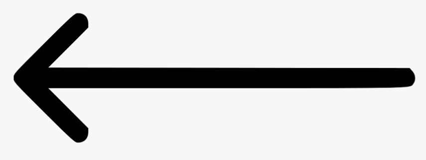

|
 |
|
|


The Edor Nelson Field is the outdoor athletic field for the Augsburg football, softball, soccer, and lacrosse teams. Augsburg is the only university in the state of MN to have their dome support 4+ sports throughout the year.
| Map | More Information | Home |
|  | |